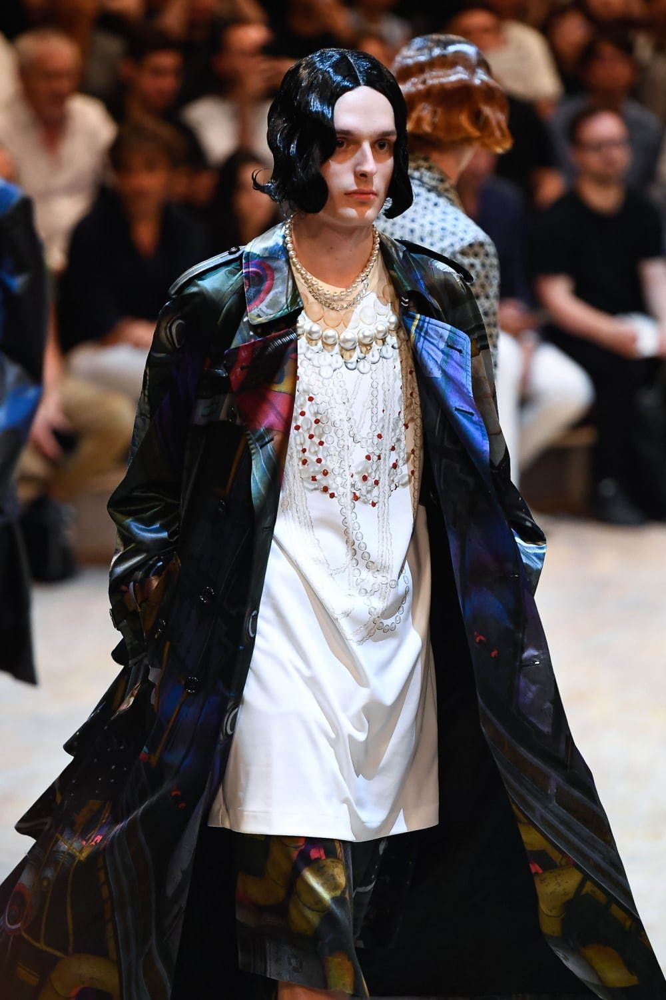

コムデギャルソンについて
コム デ ギャルソン(COMME des GARÇONS)は日本のファッションブランド。創業者でデザイナーの川久保玲(Rei Kawakubo)は1942年東京生まれ。慶應義塾大学文学部哲学科卒業。旭化成に入社し、繊維宣伝部でスタイリストを経験。その後フリーランスの活動を経て「コム デ ギャルソン」の婦人服の製造と販売をスタート。1973年に株式会社コム デ ギャルソンを設立、レディースウェアの製造販売を開始。ブランド名の由来はフランス語で「少年のように」、川久保は、ファッションの正規教育を受けていない。ギャルソンのスタイルは、社会に流されることのない、自立した女性像をデザインに落とし込んだもので、従来型の女性らしさのない、ルーズなシルエットに黒などモノトーンな色を多様、孤高の女性を描いた。また顧客向けにビジュアル誌を発行するなど、顧客とのコミュニケーションも独特で、広告や写真に登場するモデルはカメラを睨み付けるような表情だった。このようなスタイルが一部から熱狂的な支持を得て、80年代には、黒の服におかっぱ頭の女性が街中を歩き、「カラス族」と言われるスタイルを生み出した。コム デ ギャルソンのアバンギャルドで独特なファッションはマルタン マルジェラ、A.F.ヴァンデヴォーストをはじめとするアントワープ派のデザイナー、ジョン ガリアーノ、ヴィクター＆ロルフ等の外国人デザイナーにも大きな影響を与える。世界でもっとも影響力のあるデザイナーランキングでは川久保玲はトップ5の常連となっている。
ブランドのはじまり
1969年に川久保玲がブランド「コム デ ギャルソン(COMME des GARÇONS)」をスタート。1973年に株式会社コム デ ギャルソンを設立。
